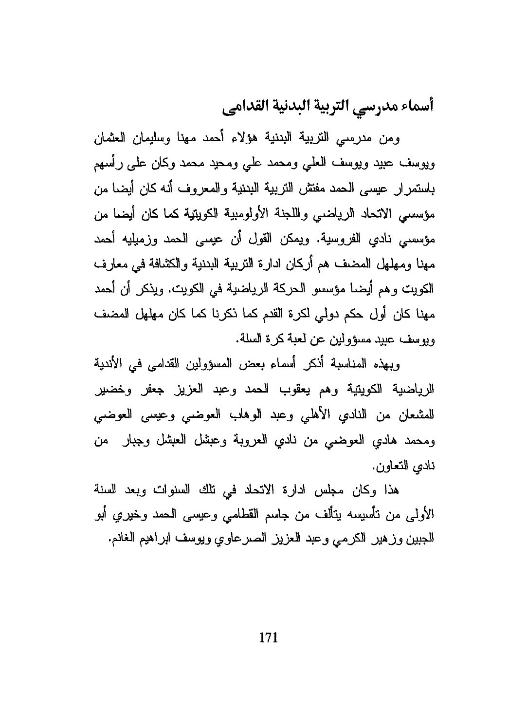

الخمسينات إلى ١٩٨٠م، مذكرات · صفحات من كتاب «قصة حياتي في فلسطين والكويت» لخيري أبو الجبين، دار الشروق
مذكرات خيري أبو الجبين: جاسم القطامي في الرياضة وخطاب ١٩٥٩ والخارجية وأول مجلس أمة
ما هي
مذكرات خيري أبو الجبين، وهو فلسطيني عمل في الكويت وشارك جاسم القطامي في الهيئات الرياضية. ١. كان جاسم القطامي رئيس أول لجنة أولمبية كويتية وأول رئيس للاتحاد الكويتي لكرة القدم، يجمع بين الرئاستين، ورأس مجلس إدارة الاتحاد الرياضي وكان أبو الجبين سكرتيرا عاما (ص ١٧١ و١٧٥ و١٧٨). ٢. وكان مع مهلهل المضف رائدي الصحافة الرياضية الكويتية، بزاوية رياضية ثابتة في مجلة البعثة في القاهرة منذ الأربعينات (ص ١٨٢). ٣. وفي ١ فبراير ١٩٥٩م، في احتفال ملعب ثانوية الشويخ بالذكرى الأولى لإعلان الوحدة بين مصر وسوريا، كانت كلمته حماسية للغاية فاعتقلته الحكومة ثم أفرجت عنه، وحلت الأندية والاتحادات الرياضية (ص ١٧٧ و١٩٥). ٤. وعين بعد ذلك وكيلا لوزارة الخارجية وكانت في منطقة النزهة (ص ٢٠٠)، وكان أحد نائبي رئيس أول مجلس أمة مع سعود العبدالرزاق (ص ٢٠١). ٥. وفي عام ١٩٨٠م تحدث، بصفته نائب رئيس مجلس الأمة الأسبق ورئيس المنظمة العربية لحقوق الإنسان، في حفل تأبين أحمد الشقيري (ص ٢٦١).
أهميتها
شهادة زميل عاصره على دور جاسم عبدالعزيز القطامي التأسيسي في الرياضة الكويتية، وعلى خطاب ١٩٥٩ الذي أدى إلى اعتقاله.
صور الصفحات


ملاحظات
نعرض هنا الصفحات الأولى فقط، ويرى أفراد العائلة بعد تسجيل الدخول كل الصفحات وعددها 10.
المصادر
خيري أبو الجبين، قصة حياتي في فلسطين والكويت، دار الشروق، ص ١٧١ و١٧٥ و١٧٧ و١٧٨ و١٨٢ و١٩٥ و٢٠٠ و٢٠١ و٢٦١
كيف كُتب هذا النص: تذكر الصفحة ٢٠١ أن نائبي رئيس أول مجلس أمة كانا سعود العبدالرزاق وجاسم القطامي، وهذا من ذاكرة الكاتب. وتنتهي الصفحة ١٧٥ في منتصف جملة ولم ترسل الصفحة ١٧٦، ولا تظهر سنة النشر في الصفحات المرسلة.
افتح في الموقع التفاعلي